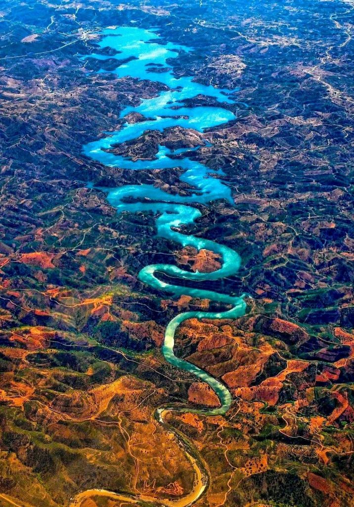

ဒီမြစ်ရဲ့ မူရင်းအမည်က နဂါးပြာဖြစ် မဟုတ်ပါဘူး။ ဒီမြစ်နားက လူတွေကလဲ ဒီမြစ်ကို ထူးထူးခြားခြား မြစ်တစ်စင်းမဖြစ် မမြင်ပါဘူးတဲ့။ သာမန် မြစ်တစ်စင်းပါပဲ။ နဂါးပြာ မြစ်လို့ အမည်တွင်သွားရတဲ့ အဖြစ်ကတော့ ဓါတ်ပုံဆရာ စတိဗ် ရစ်ချတ် (Steve Richard) ရိုက်လိုက်တဲ့ ဓါတ်ပုံ တစ်ပုံကြောင့်ပါ။ သူရိုက်ခဲ့တဲ့ ဟောဒီဓါတ်ပုံ ကိုမြင်တဲ့သူတွေက မှတ်ချက်ဝိုင်းပေးကြတာကနေပြီး ဒီအမည် တွင်သွားရတာ ဖြစ်ပါတယ်။

တရားဝင် အနေနဲ့ ကျွန်တော်ပြောပါမယ်။ ဒီပုံဟာ အပြင်မှာ တကယ်ရှိတဲ့ နေရာတစ်ခုရဲ့ ပုံအစစ်ဖြစ်ပါတယ်။ ဒီပုံကို ကားဒစ်ဖ် ကနေ ဖာရို ကိုအသွားမှာ လေယာဉ်ပေါ်က ရိုက်ခဲ့တာ ဖြစ်ပါတယ်။ မြစ်ရေအပြာရောင်ကတော့ ကောင်းကင်ပြာကြီးက အရောင်က မြစ်ရေမှာ လာဟပ်လို့ပါ။ မြစ်ထဲက အဖြူရောင် အဖတ်လေးတွေက ကောင်းကင်က တိမ်တွေပါ။ အရောင်တွေ ဒီလို စိုပြီး ထွက်လာတာကတော့ မူရင် ဖလင်ကို တိုးပစ်ဇ် ဆေးရည်နဲ့ စိမ်ပြီးမှ ပုံကူးလို့ပါ။
စတိဗ် ရစ်ချတ် (Steve Richard)